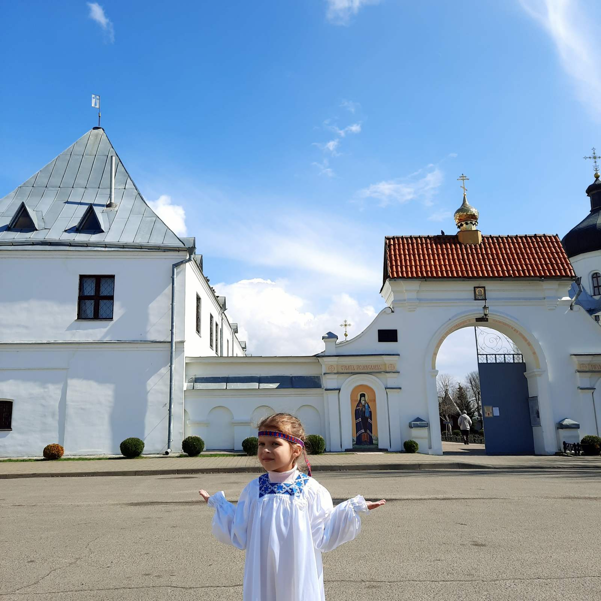
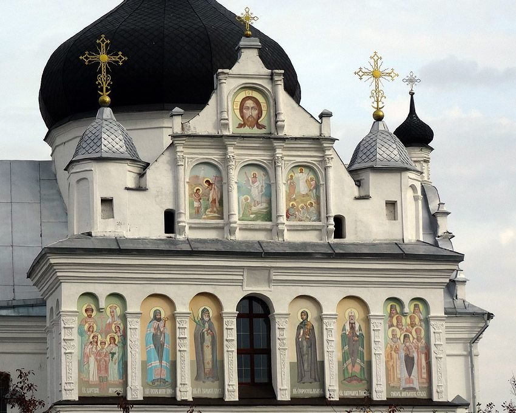
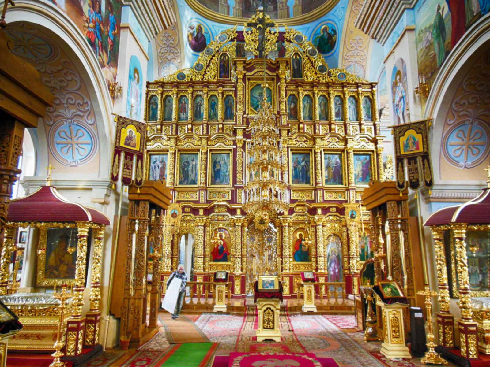
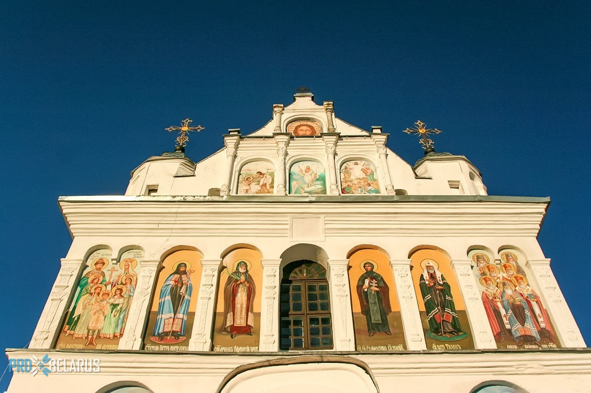

История возникновения монастыря связана с сооружением в Могилеве церкви в честь святителя Николая Чудотворца. Первое упоминание о Свято-Никольском храме относится к 1522 г. Летописи рассказывают о том, что храм много раз перестраивался, был ограблен и, наконец, большой пожар, случившийся в городе, не оставил и следа от деревянной церкви. В апреле 1636 г. Киевский митрополит Петр Могила получил согласие от польского короля Владислава IV на постройку в Могилеве Свято-Никольского храма с помещениями «для особ духовных, чернецов, попов и дьяков». Позже прихожане построили временную деревянную церковь и кельи для монахинь.
Свято-Никольский женский монастырь действовал с 1637-1719 г., а затем был преобразован в мужской, который просуществовал до 1754 г. До 30-х гг. ХХ в. Никольский храм существовал как приходской. С 1936 г. в Свято-Никольском соборе находилась пересыльная тюрьма, позднее книжная база. В середине 50-х гг. ХХ в. стены и своды храма, жемчужины европейской культуры, украшенные многочисленными высокохудожественными росписями, варварски перетерли цементным раствором, однако центральный иконостас Никольского собора чудом сохранился.
В 1989 г. Могилевская епархия была восстановлена, правящим архиереем назначен архиепископ Могилевский и Мстиславский Максим (Кроха). С этого времени началось возрождение Свято-Никольского женского монастыря. 28 марта 1991 г. освящен зимний Онуфриевский храм обители, а 18 июня 1991 г. монастырь посетил Святейший Патриарх Алексий II. Архитектурный комплекс обители состоит из Никольской церкви (1669-1672 гг.), Онуфриевского храма (1798 г.), церковного жилого дома для паломников, колокольни, усыпальницы, нового 2-х этажного корпуса с трапезной для сестер. При монастыре в 1996 г. учреждено сестричество во имя святых мучениц Веры, Надежды, Любови и матери их Софии. С 1997 г. действует воскресная школа при монастыре, молодежный православный хор, имеется богатая библиотека. В обители находятся списки икон Божией Матери: Могилево-Братская Белыничская, а также «Благодатное Небо».
Ежегодно 6 августа совершается крестный ход от монастыря к дому, где жил и трудился святитель Георгий (Конисский). Архиепископ Максим, благодаря усердным трудам которого возвращена к жизни святая обитель, покоится ныне на ее территории у Никольского собора, там же похоронена и первая настоятельница возрожденного монастыря Игумения Евгения (Волощук).
КОНТАКТЫ: 247720, Беларусь, г. Могилёв, ул. Т. Сурты, 19.
КОНТАКТЫ: 247720, Беларусь, г. Могилёв, ул. Т. Сурты, 19.